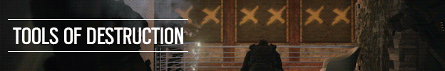

Опануйте мистецтво руйнування та користування гаджетами у Tom Clancy’s Rainbow Six Siege. Зустрічайте напружені битви на коротких дистанціях та відкритому просторі, високу летальність, прийняття тактичних рішень, командну гру та вибухи будь якої миті. Відчуйте нову еру запеклих боїв і експертної стратегії, що народилися з багатої спадщини минулих ігор Tom Clancy's Rainbow Six.
Руйнування – основа ігрового процесу Rainbow Six Siege. Щодо стратегії захисту гра надає практично необмежені можливості: оперативникам доступні засоби посилення стін та підлоги, розкладні щити, колючий дріт та багато іншого. Атакуюча сторона має змогу захопити позицію супротивника за допомогою розвідувальних дронів, пробивних зарядів та інших інструментів, які використовуються під час штурму.

Обирайте з десятків висококваліфікованих оперативників спецпідрозділів з усього світу. Використовуйте новітні технології для відстеження руху ворога. Розбийте стіни, щоб відкрити нові лінії вогню. Пробивайте стелі та підлоги, щоб створити нові точки доступу. Використовуйте кожну зброю та гаджет зі свого смертоносного арсеналу, щоб знайти, маніпулювати та знищити своїх ворогів і навколишнє середовище.
Відчуйте нові стратегії та тактики, оскільки Rainbow Six Siege постійно розвивається. Змініть правила Siege з кожним оновленням, яке включає нових операторів, зброю, гаджети та карти. Еволюціонуйте разом зі своїми друзями разом із постійно мінливим ландшафтом і станьте найдосвідченішими та найнебезпечнішими операторами.
Змагайтеся з гравцями з усього світу в рейтингових матчах. Зберіть свою найкращу команду та приєднуйтесь до конкурентної спільноти в щотижневих турнірах або дивіться, як кращі професійні команди змагаються в Rainbow Six Siege Pro League.